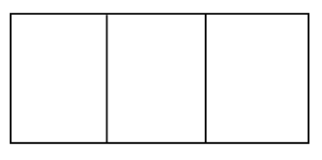

Use Pascal’s triangle to expand \((x+y)^6\) without multiplying it out. Hint: Pascal’s triangle will give you the coefficients. All you need is the pattern of the powers.
Rewrite \(x^{2}+y^{2}-6x=0\) in polar form.
Graph each of the following conic sections. Identify all of the key information, such as the locations of the foci and/or the equations of any asymptotes.
\(\displaystyle \frac{(x-4)^2}{144}+\frac{(y+1)^2}{169}=1\)
\(\displaystyle \frac{(y+3)^2}{10}-\frac{(x-3)^2}{20}=1\)
Given \(z_1=6\left[\cos\left(\frac{7\pi}{12}\right)+i\sin\left(\frac{7\pi}{12}\right)\right]\) and \(z_2=3\left[\cos\left(\frac{\pi}{4}\right)+i\sin\left(\frac{\pi}{4}\right)\right]\) compute each of the following values. Write your answers in \(a+bi\) form.
\(z_1z_2\)
\(\displaystyle \frac{z_1}{z_2}\)
Identify all of the roots of the polynomial \(p(x)=-x^{4}+4x^{2}-12x+9\).
Let \(g(x)=x^2-x\). Show that the instantaneous rate of change at \(x=3\) is \(5\). That is, compute \(\displaystyle \lim_{h\to 0}\frac{g(3+h)-g(3)}{h}\).
Write out the first four terms of each of the following sequences. Then evaluate \(\displaystyle \lim_{n\to\infty}a_n\).
\(\displaystyle a_n=\frac{2-n}{3+n}\)
\(\displaystyle a_n=\frac{(-2)^n}{3^n}\)
\(\displaystyle a_n=\frac{(-2)^n}{2^n}\)
Given \(\sec(A)=\frac{5}{3}\) and \(\cot(B)=\frac{12}{5}\) where \(0<A\), \(B<\frac{\pi}{2}\), determine the exact value of each of the following trigonometric expressions.
\(\sin(A)\)
\(\cos(B)\)
\(\sin(A+B)\)
\(\cos(A+B)\)
\(\tan(A+B)\)
Use Pascal’s triangle to expand \((a+bc)^4\). Hint: Expand \((x+y)^4\) and then substitute the \(a\) for \(x\) and \(bc\) for \(y\).
The first term of an arithmetic sequence is \(-13\) and the last term is \(71\). If the sum of terms is \(8671\), how many terms are in the sequence?
Complete the following division problem. Express any remainder as a fraction.
\(\displaystyle \frac{2x^{4}+2x^{3}-5x^{2}-x+2}{x^{2}+x-2}\)
Given the parametric equation \(x(t)=2t-1\), \(y(t)=t^2+1\), write the equation of a function in the form \(y=f(x)\) that will generate the same curve.
Solve: \(z^{3}+1=-i\).
My mystery function, f, has all of the following attributes:
\(\displaystyle \lim_{x\to\infty}f(x)=6\)
\(\displaystyle \lim_{x\to -\infty}f(x)=-3\)
\(\displaystyle \lim_{x\to 8^{+}}f(x)\) does not exist, but \(f(x)\) approaches negative infinity.
\(\displaystyle \lim_{x\to 8^{-}}f(x)\) does not exist, but \(f(x)\) approaches positive infinity.
What, if anything, can you conclude about the asymptotes of the graph?
Sketch a possible graph having these attributes.
A barge delivering a crane to the port of Oakland has to wait for lower tides in order to clear the Bay Bridge. At low tide, the maximum clearance for the bridge is \(186\) feet. At high tide the maximum clearance is \(178\) feet. The crane requires a clearance of \(184\) feet. Tomorrow, low tide occurs at 9:20 a.m. and high tide occurs at 2:50 p.m. For what time intervals will the crane be able to clear the bridge?
A rectangular pen is to be constructed with three sections as shown in the diagram. If the total amount of fencing available is \(500\) feet, what is the maximum area that can be enclosed by the fence?
